bar
A progress bar with ticks; a tap on it goes anywhere.
| Helper | States | Size | Refresh | Right to left | Used in |
|---|---|---|---|---|---|
pbar | share | DU, own-box | fills from the book's start side | dock |
Generated from reader/design/spec and the renders kept in reader/design/golden. The renders are what the reader draws, at a third of their size. Change the spec, then the template; make design-update says what is out of step.
No clock, no bar, no ticking while reading: the reader sleeps until a touch or a button.
Kept by: by eye (the reading screen has no controls: checked)The dock at the bottom; the glance beside the finger; in landscape, at the grip.
Kept by: by eyeLight where there is a light, Listen where there is sound, colour on colour screens: a control the device lacks is not drawn, never greyed out. What the book lacks is another thing: Listen in a book with no narration is shown light, not a button, so the tools keep their places and the feature is seen to exist. And what is not built yet on a device that has the hardware (the Kindle's sound, 2026-11-06) is drawn, and a notice says it is not there yet.
Kept by: a control's `requires` is a capability, and CheckControls leaves it out of a device that lacks it (TestRequires); the light Listen is by eyeThe page buttons reach every control, for devices and people that need them.
Kept by: every screen has a page-button map when the device has page buttonsThe library's header and the book's bar are one component in one place: the way back or search at the start, the device's time, light and battery at the end.
Kept by: both screens are made from topbar.html (template check)Each layer its own box and waveform; black and white controls, no shadows, greys or motion. Smooth by default: no flash on a page turn or a panel; a wake from sleep flashes white, then the page, so the sleep screen does not stay behind the text.
Kept by: every component names a waveform the device has and a regionThe frame of a screen (the order of things in a row, icons, controls, where a bar or a tag sits) follows the interface's language: English left to right, Farsi right to left, never mirrored for what is shown in it. Each piece of content (a book's title and author, a chapter's name) takes its own direction, from the language its book declares, else its first strong letter; it is isolated from what is around it and aligned by its own direction inside the frame. A book's own parts keep its direction: its pages and page turns, its contents (one book's list, in its language), what shows its progress (its bar filled from the book's start). In the library a Farsi title reads from the right and its bar sits in the same column as an English one's (2026-11-23; as W3C's guidance on bidirectional text and Unicode's bidi algorithm, UAX #9).
Kept by: by eye (the library's renders: a mixed shelf, its bars in one column)A tap on the page, Done, a close button or a jump: each closes everything at once and leaves the page alone, one refresh.
Kept by: a screen's dismiss is a tap off it or a control going to the page or back to where it came fromA tap outside a panel closes the panel and leaves the bar and dock it was opened from; a second tap on the page closes those. (Decided 2026-11-01 after use: kept, it saves a tap when moving between Light and Text.)
Kept by: by eye (the device walk closes Light, then uses the bar)A control whose value alone does not say what it sets has its name at the start of its line, regular, in the ink's colour, the control after it with its value regular (a setting's row: Sleep after, Follow book language; a labelled dropdown: Catalogue). Neither is bold; the control's border marks what is tapped. One under a heading, or whose value says it, has no name. As Apple's settings rows, Material's list items and WCAG's labels (2.4.6, 3.3.2): a name that stays, not a placeholder (2026-11-23).
Kept by: by eye (the samples of the dropdown, stepper and toggle on the page)A catalogue's choices (Browse and filter) are only those it answers itself, in this order: its facets when it gives them (OPDS facets: it filters, counts and combines them); its sections, always (a link to another feed: a place, not a filter, so one is in force at most); its search when it declares one (OpenSearch, with the keyboard); and filters of our own from the books' details only when the whole catalogue is in hand (a feed with no next page), so their counts are true. Never a filter over the one page loaded, and never a meaning read from a section's title (Updates, Nouveautés): titles are shown as the catalogue wrote them. A catalogue with none of these has no funnel (2026-11-23, after reading our four catalogues' feeds: none has facets).
Kept by: by eye (the planned renders of catalogue-filters)The page, the bar and dock, one panel. No panel opens another; one may take another's place.
Kept by: no goto from a panel or overlay to a panel or overlay; replace stays in one layerThe bar holds what belongs to the device (time, headphones, light, battery); the dock what belongs to the book (where you are, its tools).
Kept by: by eyeEach icon means one thing everywhere (2026-11-08): play starts listening (the dock's Listen, the word menu's); headphones are the device's sound (the bar's Sound) and mark a book that can be listened to; speakers are loudness (the volume's ends); the Bluetooth glyph connects.
Kept by: by eyeChapter arrows, a tap on the bar or Contents leave "Back to page N" in the place line until two pages are read.
Kept by: by eye (dock's back control exists)| Variable | Value |
|---|---|
--gap | 0.5em |
--ink | black |
--line | 3px |
--pad | 0.05em 0.6em |
--paper | white |
--radius | 0.4em |
| panel font | 40 px (1em); margin 40 px |
Layers, bottom up: page → screen → topbar → dock → panel → overlay
| Profile | Screen | Waveforms | Smallest tap | Page buttons | Fonts |
|---|---|---|---|---|---|
kobo-libra-colour every screen below as it draws them | 1264 × 1680 at 300 ppi | A2, DU, GL16, REAGL, GC16 | 7 mm (+ 16 px slack) | yes | farsi: Parastoo; icons: Phosphor; icons_filled: Phosphor-Fill; text: DejaVu Sans; |
kindle-paperwhite-11 | 1236 × 1648 at 300 ppi | A2, DU, GL16, REAGL, GC16 | 7 mm (+ 16 px slack) | no | farsi: Parastoo; icons: Phosphor; icons_filled: Phosphor-Fill; text: DejaVu Sans; |
kindle-paperwhite-11 differsThe panels are the same on every device: Screens shows them as kobo-libra-colour draws them. On this one, 1236 × 1648, in grey, only this differs (the tests still draw and compare every screen on it).
Not on this device: sound.
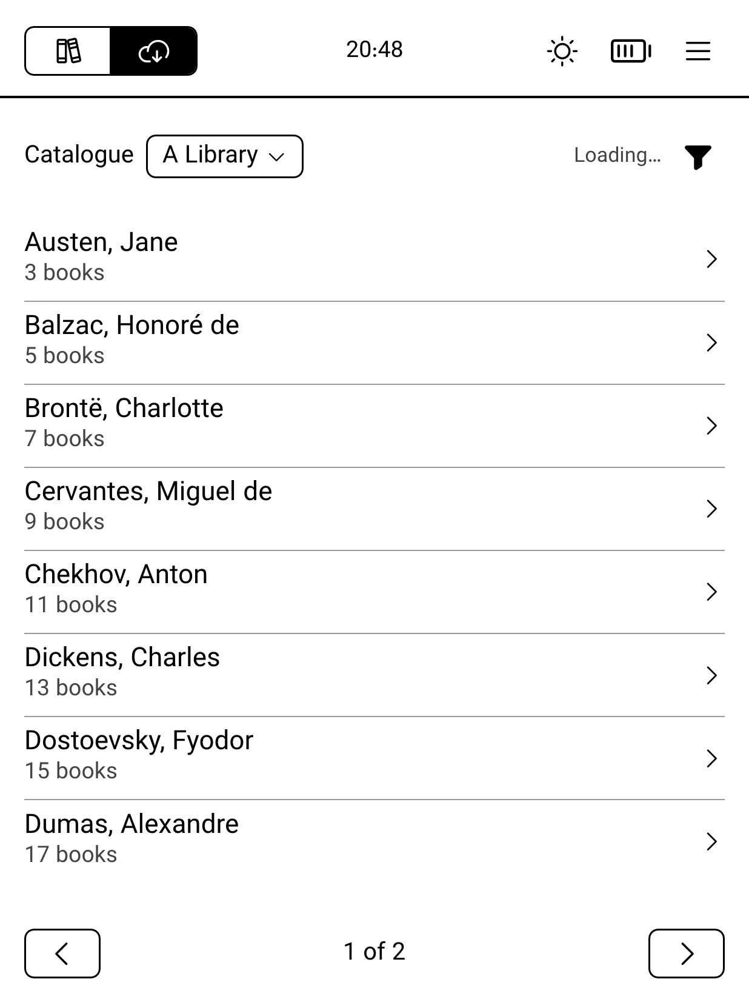
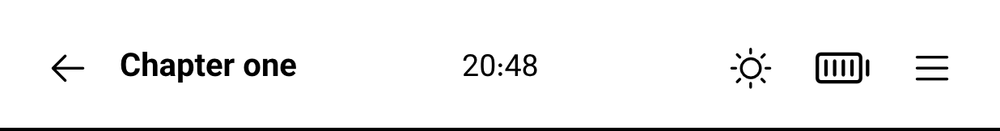
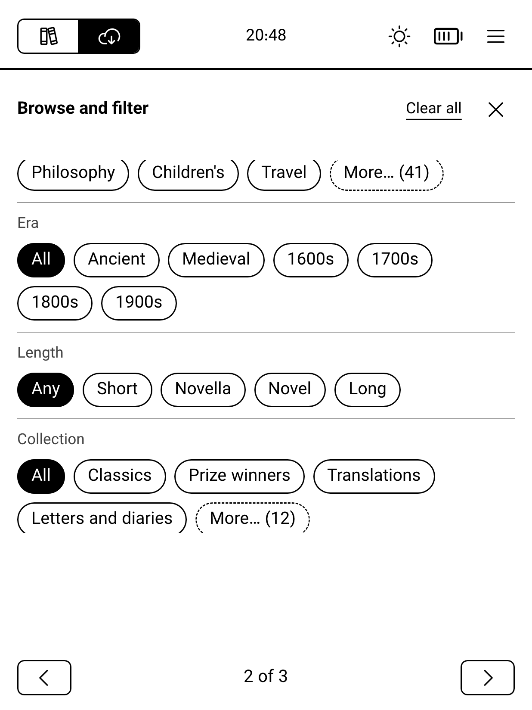
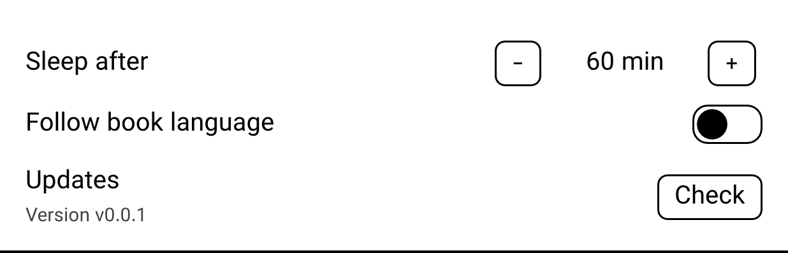
Only on this device:
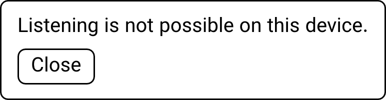
The pieces every screen is made of, drawn alone in each state from templates/samples.html (English, then Farsi: each mirrors itself), at a third of their size. A tile opens the component with what it is, where it is used and every sample.
A progress bar with ticks; a tap on it goes anywhere.
| Helper | States | Size | Refresh | Right to left | Used in |
|---|---|---|---|---|---|
pbar | share | DU, own-box | fills from the book's start side | dock |
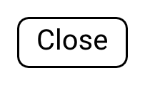
Words, and an icon before them, in a border. Does one thing when tapped.
| Helper | States | Size | Refresh | Right to left | Used in |
|---|---|---|---|---|---|
btn | off, on | DU, own-box | mirrors on its own (logical properties) | catalogue, library, topbar, dock, text, catalogue-filters, library-settings, light, sound, update-available, update-progress, wifi-ask, library-book-remove, notice |
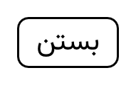
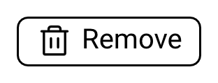
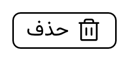
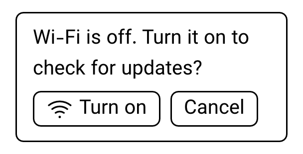
A question or a notice in a box: its sentence, a title in its own direction when there is one (a book's), a small note, then its buttons in a row: Close for a notice, the action then the way back for a question. The action has its icon before its label (Remove's trash can, Turn on's Wi-Fi; the way back, Cancel, Keep or Close, words only), so every dialog's main button looks alike (2026-11-20). A notice that says something failed has an icon before its sentence (a crossed-out Wi-Fi). One box wherever the reader asks or tells something (2026-11-06).
| Helper | States | Size | Refresh | Right to left | Used in |
|---|---|---|---|---|---|
dlg | off | GL16, own-box | the page's direction; the title its own |
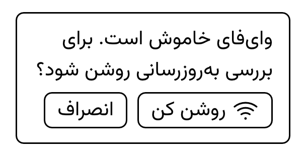
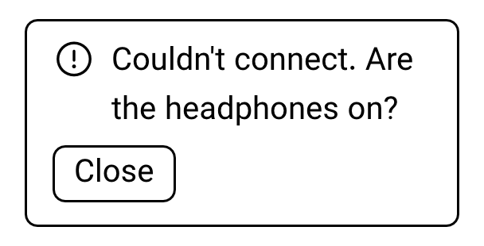
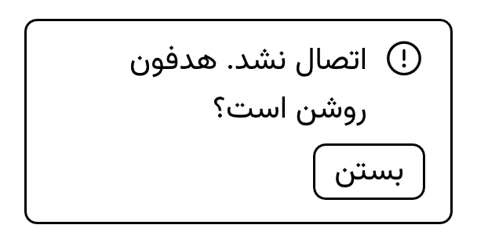
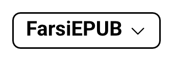
What is chosen, bold, and a caret, in a border; a tap opens the other choices as a list (menu-item rows) hanging from its start edge, the chosen one ticked. Inverted while its list is open. Its label (2026-11-23) says what is being chosen, before it on its line as a setting's name: the label regular in the ink's colour, the value then regular too (rules: A control says what it is); given when the value alone does not say it (a catalogue's name), left out when a heading or the row's name does
| Helper | States | Size | Refresh | Right to left | Used in |
|---|---|---|---|---|---|
dd | off, on, labelled | DU, own-box | mirrors on its own (the label and caret at the other sides) | catalogue |
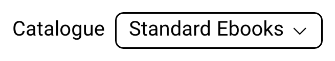
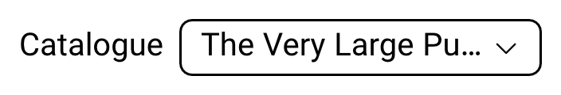
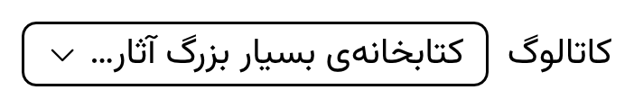
An icon alone in a box easy to tap, no border. Drawn filled when on.
| Helper | States | Size | Refresh | Right to left | Used in |
|---|---|---|---|---|---|
ibtn | off, on | 2.2em × 2.2em | DU, own-box | pointing icons are mirrored (.flip) | catalogue, contents, library, topbar, dock, catalogue-filters |
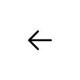
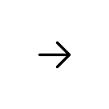
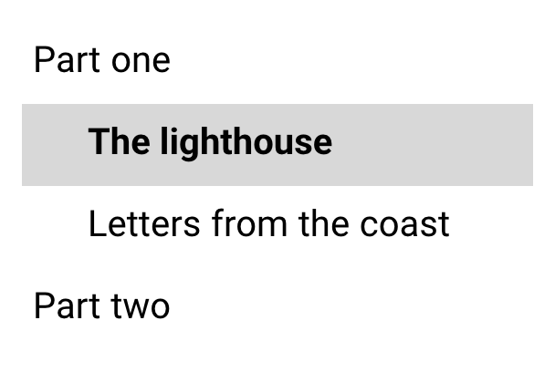
One row of a long list (Contents' entries); the current one bold on grey. A list is laid out and paginated by the engine.
| Helper | States | Size | Refresh | Right to left | Used in |
|---|---|---|---|---|---|
lrow | off, current | GL16, page | the list runs in the book's direction; each row's indent is on its start side | catalogue, contents, library |
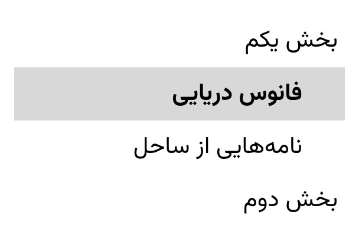
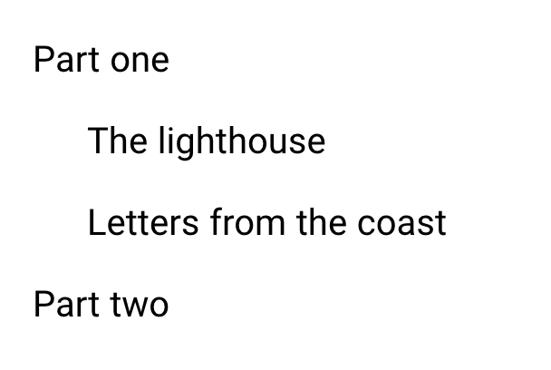
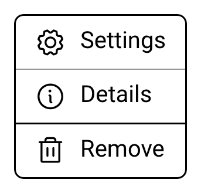
One entry of a narrow menu, the whole row the button: an action (its icon, then its words) or a choice (a tick before it, shown only on the one chosen: a dropdown's list, the catalogues). A row may be set apart by an ink line over it: the last entry (Leave, Remove book) or the first of a second group. The menu (ul.menu) hangs at the end side (end) and from what opened it (hang: no top border).
| Helper | States | Size | Refresh | Right to left | Used in |
|---|---|---|---|---|---|
mi | off, on, apart | GL16, own-box | mirrors on its own; a menu at the end side hangs from the bar's end | catalogue-menu, catalogue-section-menu, menu, highlight-menu, library-book-menu |
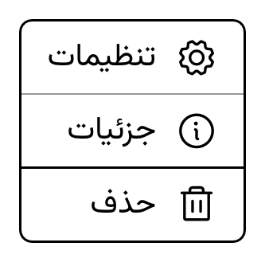
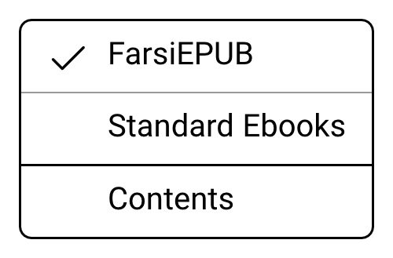
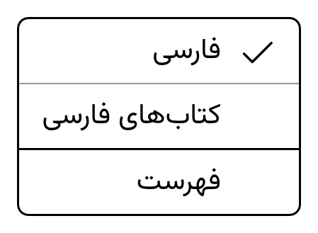
One choice of a few, as one bar; the chosen one filled.
| Helper | States | Size | Refresh | Right to left | Used in |
|---|---|---|---|---|---|
pick | off, on | DU, own-box | mirrors on its own | catalogue, library, text, catalogue-filters, library-sort |
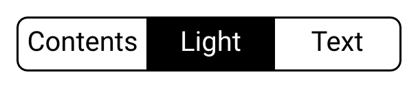
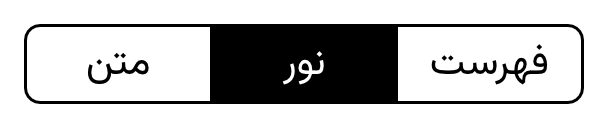
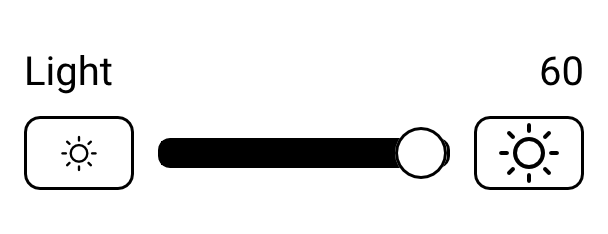
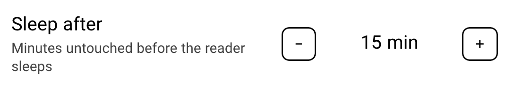
A setting's row: its name, a minus, the value, a plus.
| Helper | States | Size | Refresh | Right to left | Used in |
|---|---|---|---|---|---|
step | value | DU, own-box | mirrors on its own | text, library-settings, reading-settings |
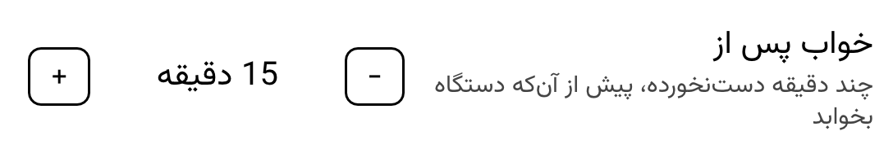
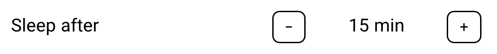
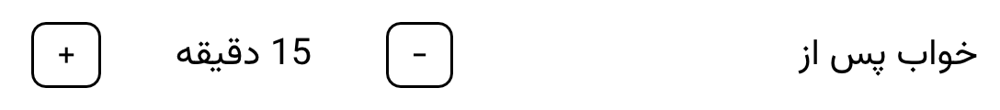
A few parts of one panel, one shown; the shown one bold and underlined, a line under all.
| Helper | States | Size | Refresh | Right to left | Used in |
|---|---|---|---|---|---|
pick | off, on | DU, own-box | mirrors on its own | text |
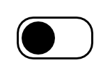
A switch: a track with a knob, dark with the knob at its end when on.
| Helper | States | Size | Refresh | Right to left | Used in |
|---|---|---|---|---|---|
pick | off, on | DU, own-box | the knob moves toward the end side | library-developer, library-settings |
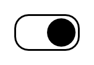
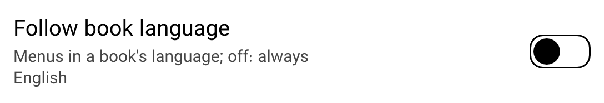
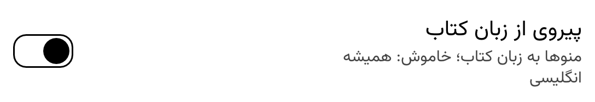
Every way into a screen: from → to: gesture control. The app starts at the library; every way out of a panel lands on the page.
Renders for kobo-libra-colour, 1264 × 1680, shown at a third. A tile opens the screen over the page, with its controls and every render (Esc or a click outside closes it); the filter searches names, layers and control ids.
The opening screen, at once when the reader starts (before the shelf is scanned) and while a book opens: ShamsaInk's stacked logo from FarsiEPUB's brand (the mark, the name, and the words by FarsiEPUB under it, no second logo). In colour on a colour screen, else grey; a quick open goes straight to the page.
A book slow to open from the library: the mark and Opening…, in colour on a colour screen. Left when the page is ready.
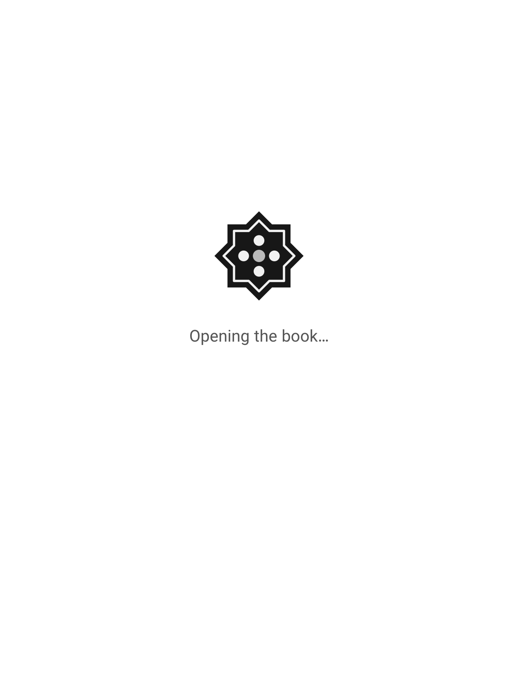

The sleep screen, while the device sleeps: one screen at random from the YAML files in ShamsaInk's sleep/ folder (docs/SLEEP-SCREEN-FORMAT.md): a couplet, a title or a quote drawn by the reader at the screen's own size, or a picture a file names (image:); grey ones follow dark mode. Only YAML files count: a picture alone in the folder is not shown. With none, or one that fails to load, the opening screen. The page comes back on waking, with a white flash first.

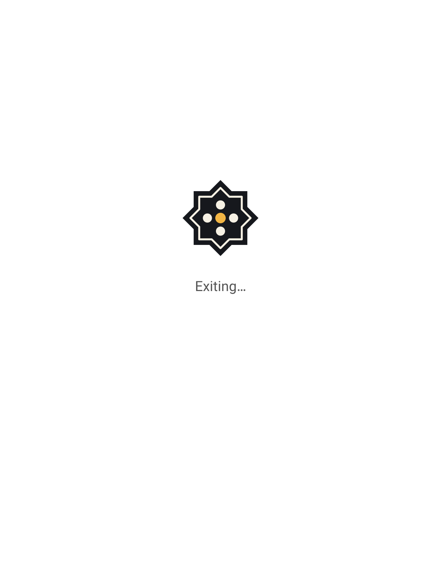
The reader being left, back to the device's own interface: the mark and Exiting…, in colour on a colour screen, always in English (as the library: a book opened by name ends the reader in its own language). Stays until that interface draws over it (on the Kobo 8 to 10 s), where the screen was blank or still the library.
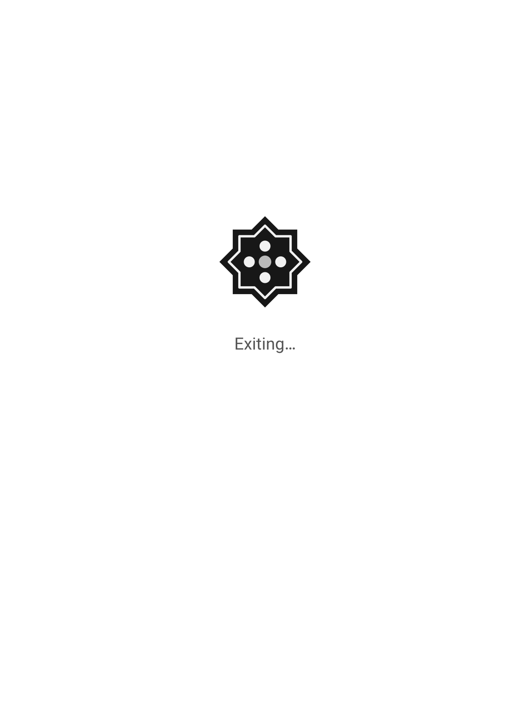
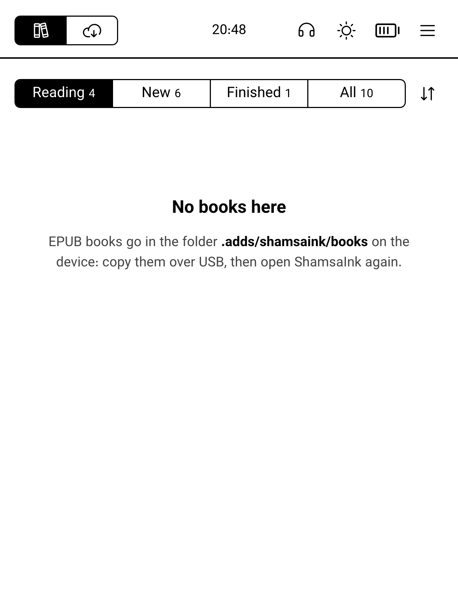
The books, a row each, under the bar (its title the choice of Library and Catalogues, Library chosen) and the filters (Reading, New, Finished, All) with a sort button; always left to right, each row's title and author in their own direction, the share read, a tag or a date at every row's right in one column (a right-to-left title ending before it). With no books in the filter chosen, one placeholder: No books here; when there are no books at all, also the folder on the device's drive that EPUB books go in.
| Control | Component | Does | When |
|---|---|---|---|
topbar-phones | icon-button | goto → sound | needs sound |
topbar-light | icon-button | goto → light | |
topbar-battery | button | goto → battery | |
topbar-menu | icon-button | goto → menu | |
shelf-library | segments | goto → shelf-name | |
shelf-catalogues | segments | goto → catalogue | |
filter- | segments | shows the books of a filter (reading, new, finished, all) | |
list-sort | icon-button | goto → library-sort | |
list-prev | icon-button | the previous page of rows | |
list-next | icon-button | the next page of rows | |
e | list-row | goto → reading |
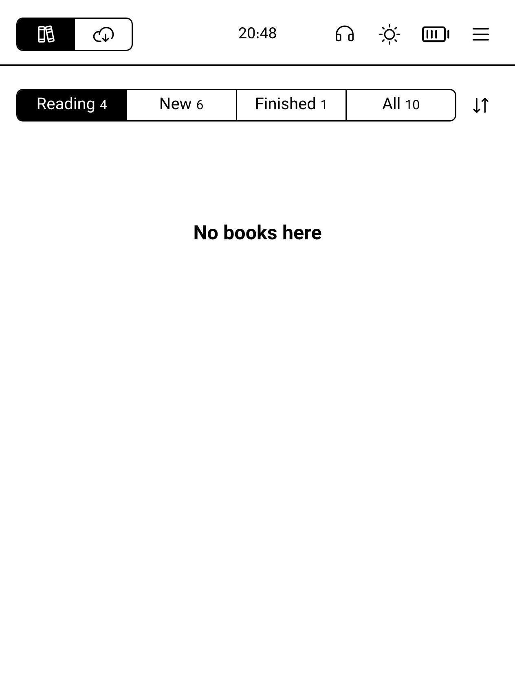

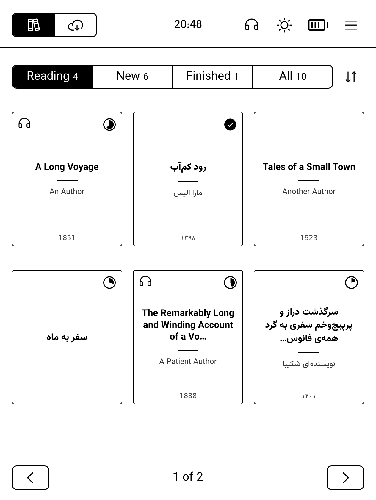

How the books are sorted, under the filters (recent, title, author, added).
| Control | Component | Does | When |
|---|---|---|---|
sort- | segments | sorts the books by the name chosen |
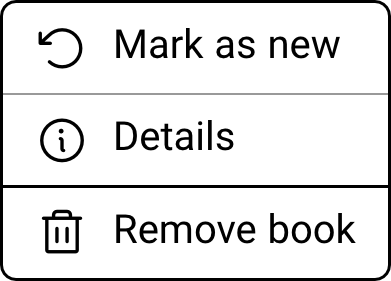
A book's menu, opened by a finger held on its row: mark finished, mark new, details, remove.
| Control | Component | Does | When |
|---|---|---|---|
book-finish | menu-item | marks the book finished | the book is not finished |
book-new | menu-item | forgets the place, keeps the highlights | the book was opened |
book-details | menu-item | replace → library-book-details | |
book-remove | menu-item | replace → library-book-remove |
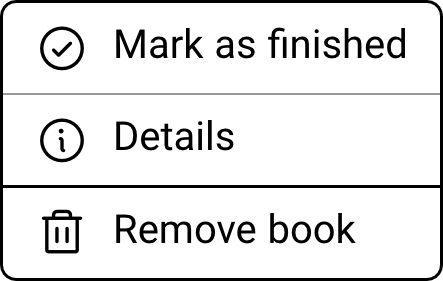


A book's facts, read only, in the menu's place; any tap closes it.
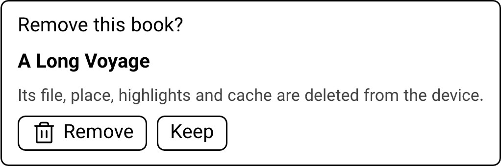
Asks before a book is removed, the dialog component in the middle of the screen: what is removed, then Remove and Keep. Removing deletes the file and all the reader keeps for it.
| Control | Component | Does | When |
|---|---|---|---|
book-remove-yes | button | deletes the book's file and what the reader keeps for it | |
book-remove-no | button | keeps the book |
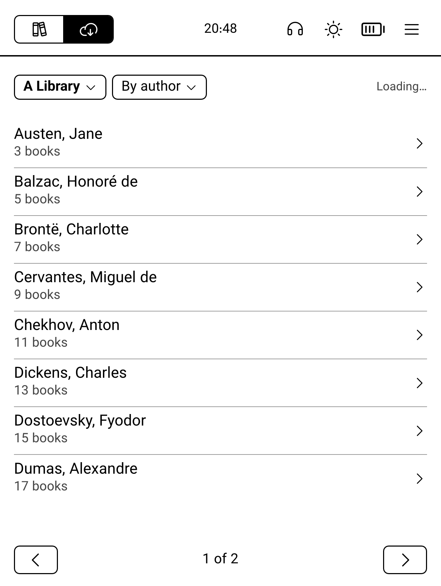
The library's Catalogues side (OPDS; FarsiEPUB's built in, others from a file over USB): under the bar the catalogue shown, a button that opens the choice of catalogues, and in a section the section shown as a second such button, which opens the way back up and the catalogue's own sections; its sections (an OPDS catalogue's menus: by author, an author...) a row each ending in a ›, then its books a row each, as the library's, each ending in what can be done with it: a download button, its per cent while it downloads (going on when you switch away), then Read, which opens it (the book is in the Library too; one downloaded before shows Read at once). Loading… at the head's end while a page is read (the last list kept and shown at once, then refreshed only if it changed), that it could not be reached with Try again, or that it has no books; More books under the last row when the catalogue has more pages. Planned (2026-11-23): the catalogue's button alone, its name only, "Catalogue" before it as a setting's name (the dropdown's label); the second dropdown gone into catalogue-filters as Browse; a funnel at the head's end opening catalogue-filters, only when the catalogue has something to choose (none: FarsiEPUB's one page), filled when a section or a facet is in force, with how many when a facet is among them; no books with them: that, and Clear filters. Wi-Fi asked for when it is off (wifi-ask), and turned off again once the catalogues are left and no download goes on; a download that failed is a notice.
| Control | Component | Does | When |
|---|---|---|---|
topbar-phones | icon-button | goto → sound | needs sound |
topbar-light | icon-button | goto → light | |
topbar-battery | button | goto → battery | |
topbar-menu | icon-button | goto → menu | |
shelf-library | segments | goto → library | |
shelf-catalogues | segments | goto → shelf-name | |
catalogue-section | button | goto → catalogue-section-menu | in a section |
catalogue-choose | dropdown | goto → catalogue-menu | |
catalogue-more | button | the catalogue's next page of books, after the last row | the catalogue has more pages |
catalogue-retry | button | reads the catalogue's page again | it could not be reached |
catalogue-filter | icon-button | goto → catalogue-filters | planned, 2026-11-23: the catalogue has sections, facets, a search or is whole on one page (Only what the catalogue can answer); none of these, no funnel |
catalogue-clear-all | button | back to the catalogue's main page with no facets (planned) | no books with the facets in force |
list-prev | icon-button | the previous page of rows | |
list-next | icon-button | the next page of rows | |
e | list-row | a section: opens it (its sections and books, the same list); a book, its button: downloads it; once it is here, opens it |
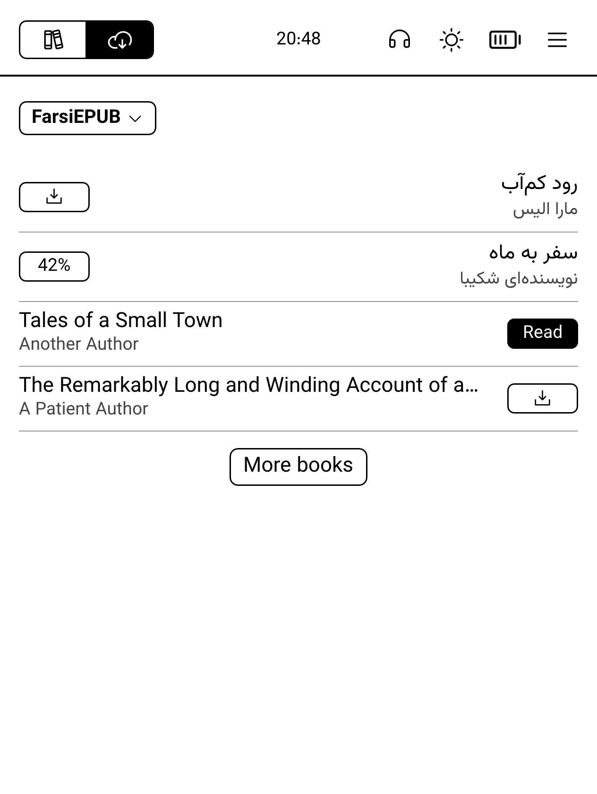
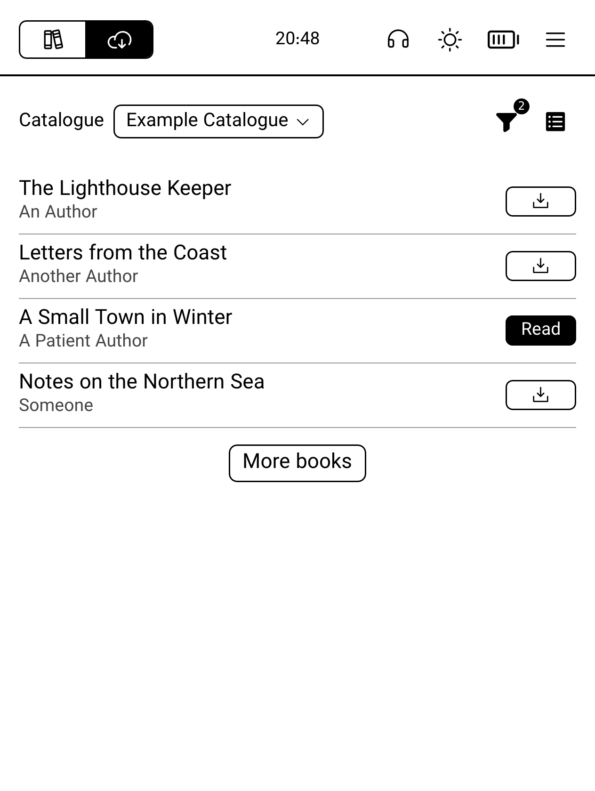
The choice of catalogues, under the catalogue shown: FarsiEPUB's first, then those from the file over USB, the one shown ticked; the last used is remembered. Add catalogue comes with the keyboard.
| Control | Component | Does | When |
|---|---|---|---|
catalogue- | menu-item | shows that catalogue's main page; the one shown again: back to its main page as it was left (its page, no read) |
The choice of sections, under the section shown (the catalogues' second button, in a section; 2026-11-22: in place of a back button): the catalogue's own sections, the one the list is under ticked; the ticked one goes back to it as it was left (its page, no read), another opens it. Not listed: the levels in between (at two levels they were the sections again), nor the main page (the catalogue chosen again in its menu goes back to it).
| Control | Component | Does | When |
|---|---|---|---|
catalogue-top- | menu-item | the section the list is under: back to it as it was left; another: opens it |
Planned (2026-11-23, not wired): a catalogue's Browse and filter, filling the screen under the bar, opened by the funnel at the head's end; paged as a list when long (no scrolling on e-ink). Its title with Clear all (when any is in force) and a close; then the catalogue's own sections as Browse (a deeper one, By author ›, opens its own; in place of the second dropdown, so the head keeps one), then each group of the feed's facets (OPDS 1 facets, their facetGroup; Sort first): its name and what is chosen, its choices as chips, the chosen one filled, how many books when the feed says, a long group's first few and More…, which opens that group in place (the back arrow and its name in the title), every choice a row, paged, as a deeper section does (By author: its authors, the feed's next pages read as they are turned to). A tap follows that choice's link at once and the panel stays, Loading… in its title, until the new feed's choices come; Show N books at its foot (Done when the feed gives no number) closes it. Only what the catalogue can answer is shown (principles.yaml): its facets, its sections, later its search, and our own filters only when the whole catalogue is on one page. A feed without facets has Browse alone and the title says Browse (Browse and filter once a filter is there), one without sections no Browse. A section's link does not say whether it leads to books or to more sections (Ebooksgratuits' are plain application/atom+xml): it is fetched when tapped, books keep the panel with the new choices, more sections show as their own group named by the section, and › marks one only when its kind is known (declared, or seen).
| Control | Component | Does | When |
|---|---|---|---|
filter- | segments | follows that choice's link: a section opens, a facet applies; the panel stays with the new feed's choices; More… shows the rest of its group | |
filters-clear | button | back to the catalogue's main page with no facets | any is in force |
filters-back | icon-button | from a group opened (More…, a deeper section) back to all the groups | a group is open |
list-prev | icon-button | the previous page | |
list-next | icon-button | the next page | |
filters-close | icon-button | goto → catalogue | |
filters-show | button | goto → catalogue |
The name of the library's side shown (Library or Catalogues, the bar's two icons) and what it holds, in a small box hanging from the bar under its icon, as the battery's level; opened by a tap on the side already shown, closed by any tap (2026-11-22: the icons alone say less than their words did).
The book and nothing else. Every control is a layer over it, never written into it.

Where the reader is, a bar to go anywhere in the book, the way back after a jump, and the tools.
| Control | Component | Does | When |
|---|---|---|---|
chapter-prev | icon-button | the previous chapter | |
progress | bar | go to the share tapped | |
chapter-next | icon-button | the next chapter | |
back | button | back to where the jump started | after a jump |
contents | icon-button | goto → contents | |
text | icon-button | goto → text | |
read-aloud | icon-button | start the narration (where the device has no player of ours yet, the notice) | the book is narrated |


The book's table of contents as a list, the current entry marked; a tap on an entry goes there.
| Control | Component | Does | When |
|---|---|---|---|
contents-close | icon-button | goto → reading | |
e | list-row | goto → reading |

The text's size, line spacing and margins, and the page turns' direction, with the page showing between the bar and the sheet.
| Control | Component | Does | When |
|---|---|---|---|
tab-text | tabs | shows the Text tab | |
tab-page | tabs | shows the Page tab | |
size | stepper | text size, smaller or larger | Text tab |
lines | stepper | line spacing | Text tab |
margin | stepper | margins | Text tab |
dir- | segments | page turns follow the book's direction | Page tab |
dir-rtl | segments | page turns right to left | Page tab |
dir-ltr | segments | page turns left to right | Page tab |
reset | button | the book's text settings back to the defaults |


By the words chosen (a finger held on a word, dragged and lifted) or a highlight held: Highlight or Remove highlight, and Listen from here in a narrated book. Hangs under the words, over them when there is no room.
| Control | Component | Does | When |
|---|---|---|---|
hl-make | menu-item | highlights the words chosen | words are chosen |
hl-remove | menu-item | removes the highlight held | a highlight is held |
hl-listen | menu-item | starts the narration from the word | the book is narrated |

Over the page's top, the same in the library and a book.
| Control | Component | Does | When |
|---|---|---|---|
topbar-light | icon-button | goto → light | needs light |
topbar-start | icon-button | goto → library | |
topbar-phones | icon-button | goto → sound | needs sound |
topbar-menu | icon-button | goto → menu | |
topbar-battery | button | goto → battery |


A narrow list hanging from the bar's menu button: in the library Settings (in dev mode Developer under it) and Leave to the device's interface, the only way out (the leaving screen after it); in a book Reading settings.
| Control | Component | Does | When |
|---|---|---|---|
settings | menu-item | replace → library-settings | in the library |
developer | menu-item | replace → library-developer | in the library, in dev mode needs development |
reading-settings | menu-item | replace → reading-settings | in a book |
leave | menu-item | leaves to the device's interface | in the library |
The light's level and warmth, and a full refresh to clean the screen.
| Control | Component | Does | When |
|---|---|---|---|
light | slider | set the level | |
warmth | slider | set the warmth | needs warmth |
dark | button | dark mode on or off (filled when on): the whole screen inverted, with a full refresh; the choice kept from then on (until chosen, each start follows the device: the Kindle's Dark Mode, light on the Kobo) | |
clean | button | a full refresh |

Connected, the narration's volume and Disconnect; not connected, Connect in its place, for the pair used last. The bar's headphones drawn filled while it is open.
| Control | Component | Does | When |
|---|---|---|---|
volume | slider | set the narration's volume (a gain on our sound, remembered per pair of headphones) | headphones are connected |
disconnect | button | disconnect the headphones (Connect takes its place) | headphones are connected |
connect | button | connect the pair used last, Bluetooth restarted first if it is stuck | no headphones are connected |

The battery's level, and below it charging, fully charged or low when it is, in a small box hanging from the bar under its battery; any tap closes it.


Settings, rows with no title: Sleep after with a stepper, then the switches (Follow book language, and on a device with page buttons Reverse page buttons); under them Updates, its own row (2026-11-20, the maintainer: not a button on the version line, not in the menu): the version running as its grey second line, Check at the row's end. A tap applies it at once.
| Control | Component | Does | When |
|---|---|---|---|
lang-follow | toggle | interface language follows the book's, or English only | |
buttons-reverse | toggle | the page buttons swapped: the lower goes back, the upper forward | needs buttons |
sleep | stepper | minutes untouched before the reader sleeps the device, 5 the least, no never | |
update-check | button | checks for a newer version (roadmap step 2, built 2026-11-20; updates.go): Wi-Fi off, asks first (wifi-ask); then up to date (notice), or update-available; on a device without Wi-Fi of ours, not on this device yet (notice; none now: the Kindle has it since 2026-11-20) |
Reading settings, in a book, in the menu's place: what acts on reading and does not need the page showing behind it (the Text sheet in the dock does). Now: the screen cleaned on its own (the automatic Clean screen: a full refresh, with its flash) every N page turns, light mode and dark apart. A tap applies it at once.
| Control | Component | Does | When |
|---|---|---|---|
clean-light | stepper | page turns between cleanings of the screen in light mode, or never | |
clean-dark | stepper | page turns between cleanings of the screen in dark mode, or never (5 at first) |


Dev mode only (dev/ beside the reader, never in a release; 2026-11-11): rows as in Settings: Wi-Fi with a switch, its state under it (2026-11-20: above SSH); then SSH with a switch, and under it, small and grey, the server's state (its address while on). English in every interface language: it is for us.
| Control | Component | Does | When |
|---|---|---|---|
dev-wifi | toggle | Wi-Fi on or off for development: on, it connects with no question (the switch is the yes) and stays on until switched off; off, Wi-Fi is turned off as the device's own switch does; its state under it (off, connecting..., on with its address) | |
dev-ssh | toggle | the development SSH server on or off (the device's dev/ssh.sh; its address shown under the rows while on) |

Asks before Wi-Fi is turned on, the dialog component in the middle of the screen: what it is for, then Turn on (Wi-Fi's icon) and Cancel. Nothing turns Wi-Fi on without this yes: an action that needs the network runs at once when Wi-Fi is on and asks only when it is off; Cancel changes nothing; afterwards Wi-Fi is turned off again if the reader turned it on (2026-11-20). Built and drawn (its renders checked), with no way in yet: the Developer panel's Wi-Fi switch is the yes itself (2026-11-20); Updates (step 2) is its first.
| Control | Component | Does | When |
|---|---|---|---|
wifi-on | button | turns Wi-Fi on as the device's own interface does, connects to a saved network, then turns it off again once done | |
wifi-cancel | button | closes the question; Wi-Fi stays off |


A newer version is out (Settings, Updates, Check; roadmap step 2, designed 2026-11-20): the dialog component, A new version is available., the version on a grey line of its own (no Latin inside a sentence), then Update (its download icon) and Later; general and simple, no size and no summary (the maintainer). Later changes nothing.
| Control | Component | Does | When |
|---|---|---|---|
update-install | button | replace → update-progress | |
update-later | button | closes the question; nothing changed |


An update under way (roadmap step 2, designed 2026-11-20): Downloading the new version... and its share, the version on a grey line of its own,, in words and as a bar, with Cancel (nothing is changed until the download is whole and verified); then Restarting with the new version..., no buttons, until the new version opens on the library. A failure is a notice: the server not reached, the download cut, not verified; a new version that does not start is undone by the launcher, which says so (notice).
| Control | Component | Does | When |
|---|---|---|---|
update-cancel | button | stops the download; nothing changed |

A notice in the middle of the screen, the dialog component with a sentence and Close; any tap closes it. Listen's where the device has no player of ours yet (the Kindle): Listening is not possible on this device. Wi-Fi's: not on this device yet (the Kindle), no network saved (join one once in the device's Wi-Fi settings), no address in 20 s (try again later); the last two, failures, with a crossed-out Wi-Fi before the sentence (2026-11-20). Updates' (roadmap step 2, designed 2026-11-20; no Latin name or version inside a sentence, a version on a grey line of its own): up to date (the version under it); not on this device yet (the Kindle); the update server not reached, the download cut, the download not verified (a warning before the sentence: nothing was changed); the update undone (a counter-clockwise arrow: the new version did not start, the previous one put back). A catalogue's download that failed (the network, a cut, the storage: try again later) or whose file is not an EPUB (nothing added), with a warning (2026-11-22).
| Control | Component | Does | When |
|---|---|---|---|
notice-close | button | closes the notice |


| Map | Forward | Back | Hold forward | Hold back |
|---|---|---|---|---|
list | Ring down the list (past the end, the next page of it) | Ring up the list | Go there | Back to the page |
listening | Next page (the voice follows) | Previous page | Pause or play | A sentence back |
none | Nothing, the screen is left when the work is done | Nothing | Nothing | Nothing |
panel | Close everything and turn to the next page, one refresh | Close everything and turn to the previous page, one refresh | Nothing yet | Nothing yet |
reading | Next page | Previous page | The next chapter (the way back is the dock's Back); the dock is by touch only for now | The previous chapter (the glance, while held, when it is built) |
ring | Ring to the next control | Ring to the previous control | Choose it (on a slider or stepper, one step up) | Back out a level (on a slider, one step down) |
word-held | Selection one word longer | One word shorter | Highlight | Cancel |